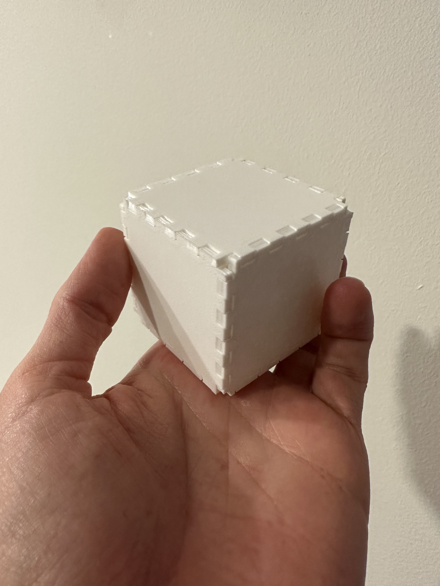

I started off in Rhino with a basic 60mm x 60mm square that I planned to add box joints to. I wasn't sure how they would all fit together in a cube & I was unsure about the fit, so I decided to start with just 2 sides of notches.
I added equally distributed rectangles along two sides using the linear array function, then trimmed both curves, and extruded to create a model to print.
2
This print was really helpful with 3d visualization, but I found that the equally sized notches and rectangle pegs did not fit well considering the precision of the machine. The second time around, I updated the rectangular pegs to be 4.8mm and the notches to be 5.2mm so that there would be +- 0.4mm of wiggle room for pushing the pieces together.
I followed the same process as above, but this time with all 4 sides notch-ified:
3
This worked much better! I printed 3 at first to make sure that it would work in a the corner, and I was happy with the result. The biggest struggle was getting all of the adhesive base out of the notches.
4
After testing out the first 3 sides, I printed the other 3 sides to make a cube, and snapped them all together! It was very satisfying having them all fit and stick together well.
